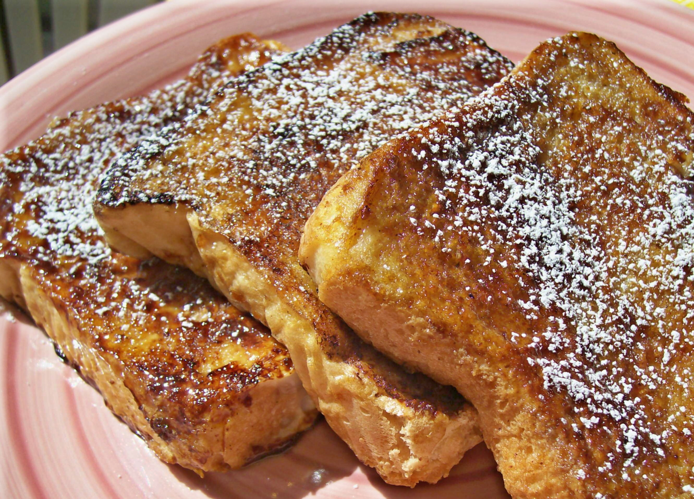
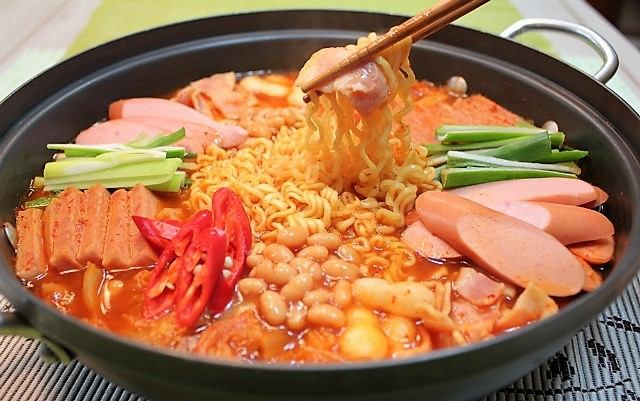

Welcome to Laura's Cooking Page!
On this page will be some fun facts along with recipes.
Breakfast
Koreans don't really have a breakfast category like the U.S.
When I say breakfast category, I mean to say that we don't categorize any food
in particular to be breakfast food. For example, in America, for breakfast there
are french toast, eggs, bacon, sausages, waffles, pancakes, etc. In Korea, traditionally,
we don't have those but nowadays since Korea is now more accepting to the Western culture,
we have implemented American breakfast into our daily lives. Koreans eat regular meals. For
breakfast, I will not post any recipes since they consist of any other meal of the day for us.
BUT, here's a simple American breakfast recipe for French Toast!

Ingredients:
- 4 eggs
- 1 cup milk (whichever you prefer)
- 1 tbsp vanilla
- 1 tbsp cinnamon
- slices of bread
- maple syrup or honey
Recipe:
-
In a medium sized bowl, crack in the 4 eggs and add to the bowl, as well
as the 1 cup of milk,
1 tbsp vanilla, and 1 tbsp of cinnamon.
- Whisk the mixture together until all ingredients are blended in well.
-
Dunk the slices of bread one at a time and put in a frying pan. Heat until
golden brown.
- Now you can eat it with your choice of maple syrup or honey!
-
(OPTIONAL): you may add slices of butter on top of the hot toast, powdered sugar,
or fresh fruits.
Lunch
Rice and chopsticks are a must! If you do not know how to use chopsticks, please
follow this link by Howcast.
If you would prefer to be healthy, you can use brown rice or quinoa as an alternative.
For lunch, since it is the winter, I have decided to put budae jjigae on the menu. Budae jjigae translated in English means "Army Base Stew".
Army base stew is a Korean/American fusion since it consists of spam, sausages, cheese (optional) and baked beans. The reason for the name
of this stew is because it is a very common dish in the Korean military when in the 1950's, there were limited ingredients, they created a
stew with whatever they can manage to put in there.

Ingredients:
Main
- 1 large shallow pot will be needed
- 1/2 - 1 cup of kimchi chopped into square size
- SPAM, sliced thinly
- Any sausage you prefer, cut into diagonal pieces
- Tofu, thinly sliced
- Mushrooms are optional, but I prefer putting
in enoki mushrooms
- Any choice of noodles, most Koreans prefer
ramyun noodles
- Rice cakes (optional)
- Green onion, thinly sliced
- Cheese (optional)
Paste/Sauce
- Small bowl needed to mix following ingredients
- About 2 tbsp Korean chili flakes or more for more spice
- 1 tbsp of soy sauce
- 1/2 - 1 tbsp of sugar
- A spooful of Korean chili paste
- Black pepper (optional)
- 4 cups of chicken stock or water
Recipe:
- Put all of the main ingredients into the pot(organized or not) except the ramyun noodles, rice cakes, green onion and cheese.
- From the small bowl, put all of the sauce on to top of the ingredients in the middle.
- Add the chicken stock or water into the pot, set heat on high or medium high and close the lid until it comes to a boil.
- You may add the remaining optional ingredients like ramyun noodles, etc. Continue cooking until the noodles are soft.
- Serve with rice.
Dinner
For dinner you may eat the remaining of the budae jjigae made from lunch.
For dessert, please select the 'dessert' link at the navigation bar located at the top.